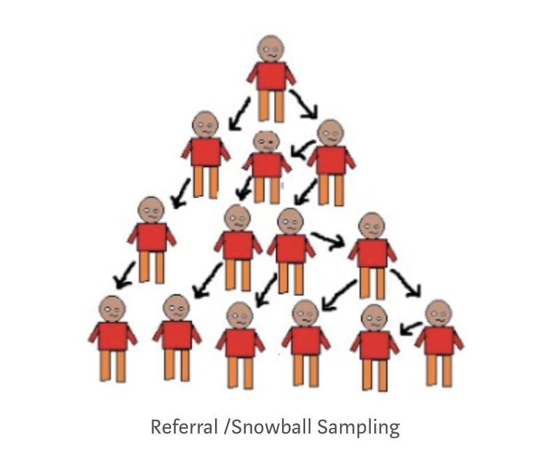

Próba i populacja
Małgorzata Basińska
Słowem przypomnienia
Rodzaje związków między zmiennymi
- Różnice między grupami:
- zmienna niezależna: zmienna grupująca
- zmienna zależna: zmienna, której zmienność może być wyjaśniania przynależnością do grup różniących się poziomiem zmiennej niezależnej
- Korelacja:
- określamy współzmienność zmiennej niezależnej i zależnej, związek liniowy między nimi
Przykłady
- długość życia a przynależność do grup o niskim i wysokim statusie socjoekonomicznym (w wybranym okresie, np. w dzieciństwie)
- spodziewana długość życia a dochody (na podstawie analiz demograficznych)
- płeć a zdolności matematyczne (uwaga: mamy poważne powody, by twierdzić, że nie ma różnicy między dziewczynkami a chłopcami)
- jedzenie cukierków w dzieciństwie i ryzyko bycia aresztowanym za brutalne przestępstwo w dorosłości
- prymowanie przy pomocy zdjęcia twarzy osoby białej/czarnoskórej a szybkość identyfikacji bodźców związanych z przestępstwami
Współczynnik korelacji
- Technicznie kilka różnych, w praktyce podobna interpretacja
- Wartości od -1 do 1, im wyższa wartość bezwzględna, tym silniejszy związek
- Wsp. korelacji = 1 lub -1 - idealna zależność liniowa
- Im silniejszy związek, tym dwie zmienne są bliżej zależności liniowej
Korelacje dodatnie i ujemne - symulacja
Możliwe wyjaśnienia obserwowanego związku A z B
- A powoduje B lub B powoduje A
- A lub B powoduje całą->kaskadę->różnych->zmian, na końcu której jest druga badana zmienna
- Trzeci czynnik (grupa czynników) powoduje, że pojawia się związek A i B
- Dodatnie i ujemne sprzężenia zwrotne (zależności cykliczne)
- Związek może być PRZYPADKOWY
Czekolada i nagroda Nobla
- Wyniki badania opublikowanego w NEJM link wskazują, że między konsumpcją czekolady (kg/rok/mieszkaniec) a liczbą nagród Nobla jakie zdobyli obywatele danego państwa istnieje silna, dodatnia, istotna statystycznie korelacja (r = 0,791; p < 0,0001)
Korelacja to to co widzimy :) przyczynowość = interpretacja
- Należy pamiętać, że kiedy interpretujemy jakąś obaserwację przyczynowo zakładamy, że manipulacja zmienną niezależną spowoduje określone zmiany zmiennej zależnej
Kiedy możemy mówić o związku przyczynowym?
- Kiedy zrobimy (dobry) eksperyment
Z zachowaniem DUŻEJ ostrożności również, gdy:
- zaobserwujemy związek między zmiennymi (na marginesie: istnieją matematyczne narzędzia, które pozwalają na uprawdopodobnienie założenia o przyczynowości)
- ustalimy następstwo czasowe (przyczyna musi poprzedzać skutek)
- będziemy skutecznie kontrolować zmienne zakłócające (uwaga: nigdy nie możemy być pewni, że kontrolujemy wszystkie!)
- wykluczymy alternatywne wyjaśnienia
Paradoks Simpsona na przykładzie leczenia kamieni nerkowych
| Leczenie A | Leczenie B | |
|---|---|---|
| Ogółem | 78% (273/350) | 83% (289/350) |
Paradoks Simpsona na przykładzie leczenia kamieni nerkowych
| Leczenie A | Leczenie B | |
|---|---|---|
| Małe kamienie | 93% (81/87) | 87% (234/270) |
| Duże kamienie | 73% (192/263) | 69% (55/80) |
| Ogółem | 78% (273/350) | 83% (289/350) |
Charig, C. R., Webb, D. R., Payne, S. R., & Wickham, J. E. (1986). Comparison of treatment of renal calculi by open surgery, percutaneous nephrolithotomy, and extracorporeal shockwave lithotripsy. BMJ, 292(6524), 879–882. https://doi.org/10.1136/bmj.292.6524.879
Terminologia i uwagi wstępne
Gdy w naszym badaniu (eksperymencie) mamy więcej niż jeden warunek
- Dobór do warunków eksperymentalnych musi być losowy - randomizacja
- Wykluczamy w ten sposób, że osoby w jednym warunku różnią się w jakiś szczególny sposób od osób w innym warunku
- Jest to sposób kontrolowania zmiennych związanych z charakterystyką osób badanych
- RANDOMIZACJA TO NIE TO SAMO, CO DOBÓR PRÓBY!!!!
Populacja i próba
- Populacja - ogół osób, do których odnosi się dana teoria psychologiczna (np. populacja wszystkich ludzi, populacja kobiet, populacja niemowląt)
- Najczęściej nie możemy zbadać całej populacji ze względów praktycznych
- Badamy tylko określoną cześć populacji - próbę
- Jest wiele różnych metod doboru próby
Metody doboru próby
Metody probabilistyczne
- Zakłada, że dysponujemy jakimś operatem losowania dla badanej populacji i z niego losowo wyłaniamy osoby badane
- Dobór prosty losowy (simple random sampling)
- Dobór warstwowy (stratified sampling)
- Dobór systematyczny (systematic sampling)
Metody nieprobabilistyczne
- Dobór przypadkowy (convenience sampling)
- Dobór kwotowy (quota sampling)
- Kula śniegowa (snowball sampling)
Dobór prosty, losowy
- Każda osoba z populacji ma równą szansę dostania się do próby
- Potrzebny operat losowania
Dobór prosty, losowy

Obrazek pochodzi z artykułu Seemy Singh pt. Sampling Techniques
Dobór warstwowy
- Dobór pod względem jakiejś ważnej charakterystyki
- Najpierw trzeba wyłonić ważne charakterystyki, co bywa trudne
- W obrębie warstw stosujemy dobór prosty losowy
Dobór warstwowy

Obrazek pochodzi z artykułu Seemy Singh pt. Sampling Techniques
Dobór systematyczny
- Jeśli dysponujemy populacją uszeregowaną, możemy wybrać co n-tą osobę z szeregu
- Często w badaniach medycznych (np. co trzecia osoba rejestrująca się do onkologa w WCO)
- Metoda dobra jeśli tylko lista nie zawiera w sobie ukrytego porządku
Dobór systematyczny
Obrazek pochodzi z artykułu Seemy Singh pt. Sampling Techniques
Dobór przypadkowy
- Kto się nawinie
- Najczęstszy przypadek w badaniach psychologicznych
- Może nie stanowić problemu, może stanowić ogromny problem
Dobór kwotowy
- Zakładamy liczebności osób o zadanych cechach obecne w populacji
- Rekrutujemy badanych aż osiągniemy te liczebności
Kula śniegowa
- Rekrutujemy badanego, po czym każemy mu przyprowadzić ludzi podobnych do niego
- Zupełnie niepoprawne metodologicznie, ale czasem jest to jedyna opcja, jeśli badamy bardzo specyficzne populacje/bardzo rzadkie cechy
Kula śniegowa

Obrazek pochodzi z artykułu Seemy Singh pt. Sampling Techniques
ISTNIEJE JESZCZE WIELE INNYCH METOD DOBORU PRÓBY
Skąd wiemy, że zależność wykryta w próbie jest obecna w populacji?
- Nawet jeśli mamy najlepszy, najbardziej reprezentatywny dobór próby…
- …nie wiemy (nie możemy być pewni).
- Możemy przypuszczać z określonym prawdopodobieństwem, że obserwowana przez nas zależność mogłaby wystąpić, gdyby zależność nie istniała i zależy nam na tym, by pokazać, że to prawdopodobieństwo jest znikomo małe.
- Do określenia tego prawdopodobieństwa potrzebujemy testów statystycznych.
- Wszystkie te testy zakładają, że próba została dobrana losowo, a zatem jest nieobciążona.
Obciążenie w doborze próby
Definicja obciązenia próby (sampling bias)
- Z obciążeniem w doborze próby mamy do czynienia, jeżeli jacyś członkowie naszej docelowej populacji mają mniejszą/większą szansę na udział w badaniu.
- W efekcie dobór nie jest losowy, ponieważ warunek tego, by dla każdej osoby z populacji prawdopodobieństwo znalezienia się w próbie było takie samo, nie jest spełniony.
Katalog
Paradoks Berksona (Berkson’s paradox)
- W momencie, w którym udział w badaniu zależny jest od wystąpienia przynajmniej jednej z badanych zmiennych, możemy zaobserwować negatywny związek między badanymi zmiennymi (i np. niesłusznie wyciągnąć wniosek, że wystąpienie jednej choroby chroni przed wystąpieniem drugiej).
- Związek między dwoma zmiennymi obserwujemy ze względu na chcarakterystykę próby.
Oryginalny przykład paradoksu Berksona
- Cukrzyca a zapalenie woreczka żółciowego wśród hospitalizowanych pacjentów. Nawet jeżeli nie ma żadnej zależności w ogólnej populacji, może stać się tak, że w badaniu pacjentów, którzy trafiają do szpitala zaobserwujemy, że cukrzyca chroni przez zapaleniem woreczka żółciowego.
- Osoby które nie mają ani cukrzycy, ani zapalenia woreczka żółciowego mają mniejszą szansę, by trafić do szpitala.
- Ergo, w grupie bez cukrzycy brakuje nam pacjentów bez zapalenia woreczka… w grupie z cukrzycą ich nie brakuje, więc może okazać się nawet, że cukrzyca chroni przed zapaleniem woreczka żółciowego.
Self selection bias
- Błąd, z którym mamy do czynienia, kiedy osoby zmotywowane do udziału w badaniu / zgadzające się na udział różnią się istotnie od interesującej nas populacji w sposób, który może wpłynąć na wyniki badania.
- Przykład: badamy związek stereotypów dotyczących ról płciowych z jakąkolwiek zmienną zależną. Jest wysoce prawdopodobne, że w przypadku, w którym w badaniu będą brać udział ochotnicy, w naszej próbie znajdą się osoby o skrajnych poglądach na ten temat, co może prowadzić do zniekształcenia wyników.
Dobór badanych z jakiejś konkretnej lokalizacji
- Błąd wynikający z tego, że z zasady osoby w jakiejś konkretnej lokalizacji (cała klasa, cała szkoła, przechodnie w jakimś konkretnym miejscu) mogą różnić się od interesującej nas populacji.
Healthy participant bias
- Ma szczególne znaczenie w badaniach związanych ze zdrowiem i badaniach epidemiologicznych.
- Osoby, które decydują się na udział w badaniu zwykle są nieco zdrowsze od tych, które na udział się nie decydują.
- Jak myślicie, jak ma się to do badań longitudinalnych i wykruszania się osób badanych z kolejnych fal badania?
Exclusion bias
- Ma miejsce, kiedy jakaś grupa potencjalnych uczestników badania w ogóle nie ma szansy wziąć udziału w badaniu…
- …bo np. nie korzysta z Internetu.
Najważniejsze pytanie
CZY NASZA PRÓBA NIE RÓŻNI SIĘ PRZYPADKIEM OD INTERESUJĄCEJ NAS POPULACJI? CZY MOŻEMY UOGÓLNIAĆ NASZ WYNIK?
Podsumowanie
Praktyczne pytania, które odbiorca badania powinien sobie zadać
- Czy dobór próby w badaniu miał charakter probablilistyczny czy autorzy zbadali jakąś próbę, którą akurat “mieli pod ręką”?
- Czy zbadane osoby mogą się różnić od interesującej nas populacji? Pod względem jakich zmiennych?
- Czy w/w zmienne mogą mieć wpływ na wyniki badania?
- Czy autorzy starali się w jakikolwiek sposób kotrolować zmienne, które mogły zakłócić wyniki badania?